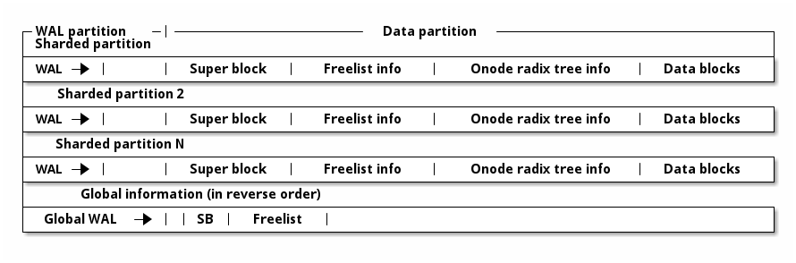
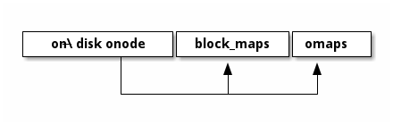
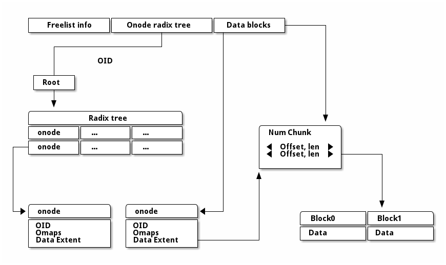
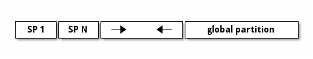
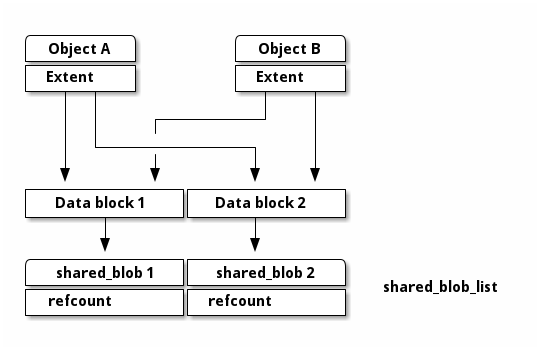

Notice
This document is for a development version of Ceph.
PoseidonStore
Key concepts and goals
As one of the pluggable backend stores for Crimson, PoseidonStore targets only high-end NVMe SSDs (not concerned with ZNS devices).
Designed entirely for low CPU consumption
Hybrid update strategies for different data types (in-place, out-of-place) to minimize CPU consumption by reducing host-side GC.
Remove a black-box component like RocksDB and a file abstraction layer in BlueStore to avoid unnecessary overheads (e.g., data copy and serialization/deserialization)
Utilize NVMe feature (atomic large write command, Atomic Write Unit Normal). Make use of io_uring, new kernel asynchronous I/O interface, to selectively use the interrupt driven mode for CPU efficiency (or polled mode for low latency).
Sharded data/processing model
Background
Both in-place and out-of-place update strategies have their pros and cons.
Log-structured store
Log-structured based storage system is a typical example that adopts an update-out-of-place approach. It never modifies the written data. Writes always go to the end of the log. It enables I/O sequentializing.
Pros
Without a doubt, one sequential write is enough to store the data
It naturally supports transaction (this is no overwrite, so the store can rollback previous stable state)
Flash friendly (it mitigates GC burden on SSDs)
Cons
There is host-side GC that induces overheads
I/O amplification (host-side)
More host-CPU consumption
Slow metadata lookup
Space overhead (live and unused data co-exist)
In-place update store
The update-in-place strategy has been used widely for conventional file systems such as ext4 and xfs. Once a block has been placed in a given disk location, it doesn’t move. Thus, writes go to the corresponding location in the disk.
Pros
Less host-CPU consumption (No host-side GC is required)
Fast lookup
No additional space for log-structured, but there is internal fragmentation
Cons
More writes occur to record the data (metadata and data section are separated)
It cannot support transaction. Some form of WAL required to ensure update atomicity in the general case
Flash unfriendly (Give more burdens on SSDs due to device-level GC)
Motivation and Key idea
In modern distributed storage systems, a server node can be equipped with multiple NVMe storage devices. In fact, ten or more NVMe SSDs could be attached on a server. As a result, it is hard to achieve NVMe SSD’s full performance due to the limited CPU resources available in a server node. In such environments, CPU tends to become a performance bottleneck. Thus, now we should focus on minimizing host-CPU consumption, which is the same as the Crimson’s objective.
Towards an object store highly optimized for CPU consumption, three design choices have been made.
PoseidonStore does not have a black-box component like RocksDB in BlueStore.
Thus, it can avoid unnecessary data copy and serialization/deserialization overheads. Moreover, we can remove an unnecessary file abstraction layer, which was required to run RocksDB. Object data and metadata is now directly mapped to the disk blocks. Eliminating all these overheads will reduce CPU consumption (e.g., pre-allocation, NVME atomic feature).
PoseidonStore uses hybrid update strategies for different data size, similar to BlueStore.
As we discussed, both in-place and out-of-place update strategies have their pros and cons. Since CPU is only bottlenecked under small I/O workloads, we chose update-in-place for small I/Os to mininize CPU consumption while choosing update-out-of-place for large I/O to avoid double write. Double write for small data may be better than host-GC overhead in terms of CPU consumption in the long run. Although it leaves GC entirely up to SSDs,
PoseidonStore makes use of io_uring, new kernel asynchronous I/O interface to exploit interrupt-driven I/O.
User-space driven I/O solutions like SPDK provide high I/O performance by avoiding syscalls and enabling zero-copy access from the application. However, it does not support interrupt-driven I/O, which is only possible with kernel-space driven I/O. Polling is good for low-latency but bad for CPU efficiency. On the other hand, interrupt is good for CPU efficiency and bad for low-latency (but not that bad as I/O size increases). Note that network acceleration solutions like DPDK also excessively consume CPU resources for polling. Using polling both for network and storage processing aggravates CPU consumption. Since network is typically much faster and has a higher priority than storage, polling should be applied only to network processing.
high-end NVMe SSD has enough powers to handle more works. Also, SSD lifespan is not a practical concern these days (there is enough program-erase cycle limit [1]). On the other hand, for large I/O workloads, the host can afford process host-GC. Also, the host can garbage collect invalid objects more effectively when their size is large
Observation
Two data types in Ceph
Data (object data)
The cost of double write is high
The best method to store this data is in-place update
At least two operations required to store the data: 1) data and 2) location of data. Nevertheless, a constant number of operations would be better than out-of-place even if it aggravates WAF in SSDs
Metadata or small data (e.g., object_info_t, snapset, pg_log, and collection)
Multiple small-sized metadata entries for an object
The best solution to store this data is WAL + Using cache
The efficient way to store metadata is to merge all metadata related to data and store it though a single write operation even though it requires background flush to update the data partition
Design

WAL
Log, metadata and small data are stored in the WAL partition
Space within the WAL partition is continually reused in a circular manner
Flush data to trim WAL as necessary
Disk layout
Data blocks are metadata blocks or data blocks
Freelist manages the root of free space B+tree
Super block contains management info for a data partition
Onode radix tree info contains the root of onode radix tree
I/O procedure
Write
For incoming writes, data is handled differently depending on the request size; data is either written twice (WAL) or written in a log-structured manner.
If Request Size ≤ Threshold (similar to minimum allocation size in BlueStore)
Write data and metadata to [WAL] —flush—> Write them to [Data section (in-place)] and [Metadata section], respectively.
Since the CPU becomes the bottleneck for small I/O workloads, in-place update scheme is used. Double write for small data may be better than host-GC overhead in terms of CPU consumption in the long run
Else if Request Size > Threshold
Append data to [Data section (log-structure)] —> Write the corresponding metadata to [WAL] —flush—> Write the metadata to [Metadata section]
For large I/O workloads, the host can afford process host-GC Also, the host can garbage collect invalid objects more effectively when their size is large
Note that Threshold can be configured to a very large number so that only the scenario (1) occurs. With this design, we can control the overall I/O procedure with the optimizations for crimson as described above.
Detailed flow
We make use of a NVMe write command which provides atomicity guarantees (Atomic Write Unit Power Fail) For example, 512 Kbytes of data can be atomically written at once without fsync().
stage 1
if the data is small WAL (written) --> | TxBegin A | Log Entry | TxEnd A | Append a log entry that contains pg_log, snapset, object_infot_t and block allocation using NVMe atomic write command on the WAL
if the data is large Data partition (written) --> | Data blocks |
stage 2
if the data is small No need.
if the data is large Then, append the metadata to WAL. WAL --> | TxBegin A | Log Entry | TxEnd A |
Read
Use the cached object metadata to find out the data location
If not cached, need to search WAL after checkpoint and Object meta partition to find the latest meta data
Flush (WAL --> Data partition)
Flush WAL entries that have been committed. There are two conditions (1. the size of WAL is close to full, 2. a signal to flush). We can mitigate the overhead of frequent flush via batching processing, but it leads to delaying completion.
Crash consistency
Large case
Crash occurs right after writing Data blocks
Data partition --> | Data blocks |
We don’t need to care this case. Data is not alloacted yet in reality. The blocks will be reused.
Crash occurs right after WAL
Data partition --> | Data blocks |
WAL --> | TxBegin A | Log Entry | TxEnd A |
Write procedure is completed, so there is no data loss or inconsistent state
Small case
Crash occurs right after writing WAL
WAL --> | TxBegin A | Log Entry| TxEnd A |
All data has been written
Comparison
Best case (pre-allocation)
Only need writes on both WAL and Data partition without updating object metadata (for the location).
Worst case
At least three writes are required additionally on WAL, object metadata, and data blocks.
If the flush from WAL to the data parition occurs frequently, radix tree onode structure needs to be update in many times. To minimize such overhead, we can make use of batch processing to minimize the update on the tree (the data related to the object has a locality because it will have the same parent node, so updates can be minimized)
WAL needs to be flushed if the WAL is close to full or a signal to flush.
The premise behind this design is OSD can manage the latest metadata as a single copy. So, appended entries are not to be read
Either best of the worst case does not produce severe I/O amplification (it produce I/Os, but I/O rate is constant) unlike LSM-tree DB (the proposed design is similar to LSM-tree which has only level-0)
Detailed Design
Onode lookup
Radix tree Our design is entirely based on the prefix tree. Ceph already makes use of the characteristic of OID’s prefix to split or search the OID (e.g., pool id + hash + oid). So, the prefix tree fits well to store or search the object. Our scheme is designed to lookup the prefix tree efficiently.
Sharded partition A few bits (leftmost bits of the hash) of the OID determine a sharded partition where the object is located. For example, if the number of partitions is configured as four, The entire space of the hash in hobject_t can be divided into four domains (0x0xxx ~ 0x3xxx, 0x4xxx ~ 0x7xxx, 0x8xxx ~ 0xBxxx and 0xCxxx ~ 0xFxxx).
Ondisk onode
stuct onode { extent_tree block_maps; b+_tree omaps; map xattrs; }
onode contains the radix tree nodes for lookup, which means we can search for objects using tree node information in onode. Also, if the data size is small, the onode can embed the data and xattrs. The onode is fixed size (256 or 512 byte). On the other hands, omaps and block_maps are variable-length by using pointers in the onode.

Lookup The location of the root of onode tree is specified on Onode radix tree info, so we can find out where the object is located by using the root of prefix tree. For example, shared partition is determined by OID as described above. Using the rest of the OID’s bits and radix tree, lookup procedure find outs the location of the onode. The extent tree (block_maps) contains where data chunks locate, so we finally figure out the data location.
Allocation
Sharded partitions
The entire disk space is divided into several data chunks called sharded partition (SP). Each SP has its own data structures to manage the partition.
Data allocation
As we explained above, the management infos (e.g., super block, freelist info, onode radix tree info) are pre-allocated in each shared partition. Given OID, we can map any data in Data block section to the extent tree in the onode. Blocks can be allocated by searching the free space tracking data structure (we explain below).
+-----------------------------------+ | onode radix tree root node block | | (Per-SP Meta) | | | | # of records | | left_sibling / right_sibling | | +--------------------------------+| | | keys[# of records] || | | +-----------------------------+|| | | | start onode ID ||| | | | ... ||| | | +-----------------------------+|| | +--------------------------------|| | +--------------------------------+| | | ptrs[# of records] || | | +-----------------------------+|| | | | SP block number ||| | | | ... ||| | | +-----------------------------+|| | +--------------------------------+| +-----------------------------------+
Free space tracking The freespace is tracked on a per-SP basis. We can use extent-based B+tree in XFS for free space tracking. The freelist info contains the root of free space B+tree. Granularity is a data block in Data blocks partition. The data block is the smallest and fixed size unit of data.
+-----------------------------------+ | Free space B+tree root node block | | (Per-SP Meta) | | | | # of records | | left_sibling / right_sibling | | +--------------------------------+| | | keys[# of records] || | | +-----------------------------+|| | | | startblock / blockcount ||| | | | ... ||| | | +-----------------------------+|| | +--------------------------------|| | +--------------------------------+| | | ptrs[# of records] || | | +-----------------------------+|| | | | SP block number ||| | | | ... ||| | | +-----------------------------+|| | +--------------------------------+| +-----------------------------------+
Omap and xattr In this design, omap and xattr data is tracked by b+tree in onode. The onode only has the root node of b+tree. The root node contains entires which indicate where the key onode exists. So, if we know the onode, omap can be found via omap b+tree.
Fragmentation
Internal fragmentation
We pack different types of data/metadata in a single block as many as possible to reduce internal fragmentation. Extent-based B+tree may help reduce this further by allocating contiguous blocks that best fit for the object
External fragmentation
Frequent object create/delete may lead to external fragmentation In this case, we need cleaning work (GC-like) to address this. For this, we are referring the NetApp’s Continuous Segment Cleaning, which seems similar to the SeaStore’s approach Countering Fragmentation in an Enterprise Storage System (NetApp, ACM TOS, 2020)

WAL
Each SP has a WAL. The datas written to the WAL are metadata updates, free space update and small data. Note that only data smaller than the predefined threshold needs to be written to the WAL. The larger data is written to the unallocated free space and its onode’s extent_tree is updated accordingly (also on-disk extent tree). We statically allocate WAL partition aside from data partition pre-configured.
Partition and Reactor thread
In early stage development, PoseidonStore will employ static allocation of partition. The number of sharded partitions is fixed and the size of each partition also should be configured before running cluster. But, the number of partitions can grow as below. We leave this as a future work. Also, each reactor thread has a static set of SPs.

Cache
There are mainly two cache data structures; onode cache and block cache. It looks like below.
Onode cache: lru_map <OID, OnodeRef>;
Block cache (data and omap): Data cache --> lru_map <paddr, value>
To fill the onode data structure, the target onode needs to be retrieved using the prefix tree. Block cache is used for caching a block contents. For a transaction, all the updates to blocks (including object meta block, data block) are first performed in the in-memory block cache. After writing a transaction to the WAL, the dirty blocks are flushed to their respective locations in the respective partitions. PoseidonStore can configure cache size for each type. Simple LRU cache eviction strategy can be used for both.
CoW/Clone
As for CoW/Clone, a clone has its own onode like other normal objects.
Although each clone has its own onode, data blocks should be shared between the original object and clones if there are no changes on them to minimize the space overhead. To do so, the reference count for the data blocks is needed to manage those shared data blocks.
To deal with the data blocks which has the reference count, poseidon store makes use of shared_blob which maintains the referenced data block.
As shown the figure as below, the shared_blob tracks the data blocks shared between other onodes by using a reference count. The shared_blobs are managed by shared_blob_list in the superblock.

Plans
All PRs should contain unit tests to verify its minimal functionality.
WAL and block cache implementation
As a first step, we are going to build the WAL including the I/O procedure to read/write the WAL. With WAL development, the block cache needs to be developed together. Besides, we are going to add an I/O library to read/write from/to the NVMe storage to utilize NVMe feature and the asynchronous interface.
Radix tree and onode
First, submit a PR against this file with a more detailed on disk layout and lookup strategy for the onode radix tree. Follow up with implementation based on the above design once design PR is merged. The second PR will be the implementation regarding radix tree which is the key structure to look up objects.
Extent tree
This PR is the extent tree to manage data blocks in the onode. We build the extent tree, and demonstrate how it works when looking up the object.
B+tree for omap
We will put together a simple key/value interface for omap. This probably will be a separate PR.
CoW/Clone
To support CoW/Clone, shared_blob and shared_blob_list will be added.
Integration to Crimson as to I/O interfaces
At this stage, interfaces for interacting with Crimson such as queue_transaction(), read(), clone_range(), etc. should work right.
Configuration
We will define Poseidon store configuration in detail.
Stress test environment and integration to teuthology
We will add stress tests and teuthology suites.
Footnotes
Brought to you by the Ceph Foundation
The Ceph Documentation is a community resource funded and hosted by the non-profit Ceph Foundation. If you would like to support this and our other efforts, please consider joining now.